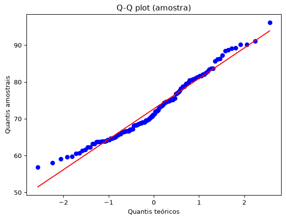
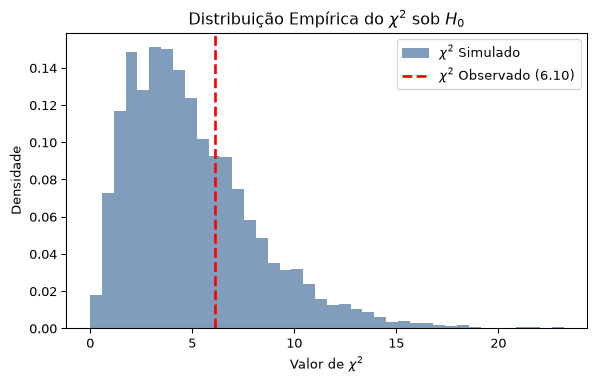

7Testes de Hipóteses e Análise de Dados Categóricos
7.1 Teste de Hipóteses
Estimação pontual, intervalos de confiança e testes de hipóteses têm o mesmo objetivo: extrair informação de um conjunto de dados observado.
Estimação pontual: fornece um único valor para descrever o parâmetro (por exemplo, a média).
Intervalo de confiança: fornece um intervalo de valores plausíveis para o parâmetro desconhecido.
Teste de hipóteses: avalia quão compatíveis os dados são com uma determinada hipótese.
Os testes de hipóteses permitem que avaliemos estatisticamente afirmações sobre parâmetros populacionais. Por exemplo, se uma empresa farmacêutica deseja afirmar que um novo medicamento reduz o risco de câncer, ela pode realizar um teste de hipóteses. Da mesma forma, se uma empresa quiser argumentar que seu programa preparatório acadêmico resulta em notas mais altas no ENEM, poderá utilizar essa mesma metodologia.
Muitas decisões importantes em áreas como negócios, medicina, educação e políticas públicas dependem dos resultados de testes de hipóteses. Nas próximas seções, veremos como esses testes podem ser conduzidos de maneira adequada e como interpretar corretamente seus resultados.
7.2 Teste de Hipóteses (Ideia)
Suponha que exista um mágico chamado Jardel, que faz a seguinte afirmação:
Mágico Jardel: Tenho aqui uma moeda honesta.
Uma pessoa da plateia, uma Cientista de Dados cética chamada Nikelly, inicia a seguinte conversa:
Cientista de Dados Cética Nikelly: Eu não acredito em você. Podemos examinar a moeda?
Mágico Jardel: Claro, fique à vontade.
Cientista de Dados Cética Nikelly: Vou lançar sua moeda 100 vezes e verificar quantas caras obtenho.
Após realizar os 100 lançamentos, Nikelly observa 99 caras.
Cientista de Dados Cética Nikelly: Você não pode estar dizendo a verdade! Não há como essa moeda ser honesta!
Mágico Jardel: Espere! Eu apenas tive azar. Juro que não estou mentindo!
Vamos dar a Jardel o benefício da dúvida e calcular a probabilidade de observarmos um resultado pelo menos tão extremo quanto esse, supondo que ele esteja dizendo a verdade.
Se Jardel não estiver mentindo, então a moeda é honesta. Nesse caso, o número de caras observadas segue uma distribuição Binomial:
\[X \sim \text{Bin}(100,0.5),\]
pois realizamos 100 lançamentos independentes e a probabilidade de cara em cada lançamento é igual a 0,5.
Queremos calcular a probabilidade de observarmos pelo menos 99 caras, já que estamos interessados em resultados tão extremos quanto o observado. Assim,
\[P(X \geq 99)= P(X=99) + P(X=100).\]
Utilizando a função de probabilidade da distribuição Binomial, obtemos
Esse valor é praticamente zero. Em outras palavras, se a moeda fosse realmente honesta, a probabilidade de observarmos 99 ou mais caras em 100 lançamentos seria praticamente nula.
Portanto, os dados fornecem evidências estatísticas extremamente fortes de que a moeda não é honesta. Nossa hipótese inicial era que a moeda fosse justa, mas, sob essa hipótese, o resultado observado seria extraordinariamente improvável. Consequentemente, há fortes razões para acreditar que nossa suposição inicial está incorreta.
Essa lógica é muito semelhante a uma prova por contradição probabilística:
Assumimos que uma afirmação é verdadeira;
Calculamos a probabilidade do resultado observado sob essa suposição;
Se essa probabilidade for extremamente pequena, passamos a duvidar da suposição inicial;
Concluímos que os dados fornecem evidências contra a hipótese assumida.
Essa é precisamente a ideia fundamental por trás dos testes de hipóteses estatísticos.
7.3 Exemplo
Existe um procedimento formal para a realização de um teste de hipóteses, que será ilustrado por meio de um exemplo. Há diversos tipos de testes de hipóteses, cada um apropriado para situações específicas, mas discutiremos essas variações mais adiante. Como veremos, o Teorema Central do Limite (TCL) desempenha um papel fundamental em muitos dos testes mais utilizados na prática.
7.3.1 Passo 1: Formular uma afirmação
O primeiro passo consiste em identificar a afirmação que se deseja investigar.
Alguns exemplos seriam:
“A comida servida nos aviões é boa.”
“Abacaxi combina com pizza.”
“Um determinado programa educacional melhora o desempenho dos estudantes.”
Em nosso exemplo, consideraremos a empresa SuperENEM Preparação, que afirma que seu programa de preparação melhora o desempenho dos estudantes no ENEM.
Suponha que, em 2025, a pontuação média nacional no ENEM fosse 662 pontos (em uma escala de 0 a 1000), com desvio-padrão igual a 131 pontos.
7.3.2 Passo 2: Definir as hipóteses
Seja \(\mu\) a verdadeira média das pontuações obtidas pelos alunos que participaram do curso SuperENEM Preparação. A hipótese nula representa a situação de referência, isto é, a ausência de efeito:
\[H_0:\mu=662.\] Em outras palavras, assumimos inicialmente que os participantes do cursinho apresentam a mesma média observada na população geral. A hipótese alternativa representa aquilo que desejamos demonstrar. Como a empresa afirma que o programa melhora o desempenho dos estudantes, definimos
\[H_A: \mu > 662.\] Essa hipótese afirma que os participantes do programa possuem uma média superior à média nacional. A hipótese alternativa apresentada acima é denominada unilateral à direita, pois procura evidências de que a média seja maior que 662. Outras possibilidades incluem:
Hipótese unilateral à esquerda:
\[H_A:\mu<662,\] caso desejássemos investigar se o programa prejudica os estudantes.
Hipótese bilateral:
\[H_A:\mu\neq 662,\]
caso estivéssemos interessados em verificar apenas se o programa produz alguma diferença, seja positiva ou negativa.
7.3.3 Passo 3: Escolher o nível de significância
Escolhemos um nível de significância \(\alpha\), que representa a probabilidade máxima de rejeitarmos incorretamente a hipótese nula. Os valores mais utilizados são 0,05 ou 0,01. Em nosso exemplo, adotaremos \(\alpha = 0{,}05\).
7.3.4 Passo 4: Coletar os dados
Suponha que observemos as pontuações de 100 estudantes participantes do programa, \(X_1,\ldots,X_{100}\). Após a coleta dos dados, verificamos que a média amostral foi \(\bar{x}=696\) pontos.
7.3.5 Passo 5: Calcular o nível descritivo (\(p\)-valor)
O \(p\)-valor é definido como a probabilidade de observarmos um resultado tão extremo quanto o obtido, ou ainda mais extremo, supondo que a hipótese nula seja verdadeira. Como estamos assumindo temporariamente que \(H_0:\mu=662\), o Teorema Central do Limite implica que a distribuição da média amostral é aproximadamente normal:
Desejamos calcular a probabilidade de observar uma média amostral pelo menos tão grande quanto a observada, \(\bar{x}=696\). Padronizando a variável, obtemos
Consultando a tabela da distribuição Normal padrão, obtemos aproximadamente
\[p_{\text{valor}} = P(Z\geq 2{,}60) \approx 0{,}0047.\] Assim, a probabilidade de observarmos uma média tão elevada quanto a obtida, caso o curso não tivesse qualquer efeito, é de apenas cerca de 0,47%.
7.3.6 Passo 6: Apresentar a conclusão
Após calcular o \(p\)-valor, devemos compará-lo com o nível de significância previamente escolhido, \(\alpha\). As regras de decisão são as seguintes:
Se (\(p_{\text{valor}} < \alpha\)), rejeitamos a hipótese nula (\(H_0\)) em favor da hipótese alternativa (\(H_A\)).
A justificativa é que, supondo que a hipótese nula seja verdadeira, a probabilidade de observarmos um resultado tão extremo quanto o obtido (ou ainda mais extremo) é igual ao \(p\)-valor. Se essa probabilidade for menor do que o nível de significância estabelecido, consideramos que os dados observados são incompatíveis com a hipótese nula.
Se (\(p_{\text{valor}} \geq \alpha\)), não rejeitamos a hipótese nula (\(H_0\)).
Como \(p_{\text{valor}} = 0{,}0047 \quad\text{e}\quad \alpha = 0{,}05,\) temos \(0{,}0047 < 0.05\). Portanto, rejeitamos a hipótese nula ao nível de significância de 5%. Podemos concluir que existem evidências estatísticas significativas para sugerir que o curso SuperENEM Preparação ajuda os estudantes a obter melhores resultados no ENEM.
Em testes de hipóteses, nunca dizemos que aceitamos a hipótese nula. A única conclusão possível é: rejeitar (\(H_0\)); ou não rejeitar (\(H_0\)).
A razão para isso pode ser compreendida retomando o exemplo da moeda. Suponha que, em vez de observarmos 99 caras em 100 lançamentos, tivéssemos observado apenas 55 caras. Esse resultado não seria particularmente improvável para uma moeda honesta. Portanto, não teríamos motivos para acusar o mágico de estar mentindo. Entretanto, isso não significa que tenhamos provado que a probabilidade de cara seja exatamente
\[p=0{,}5.\]
A verdadeira probabilidade poderia ser, por exemplo,
\[p=0{,}54
\quad\text{ou}\quad
p=0{,}58.\]
Os dados simplesmente não forneceram evidências suficientemente fortes para rejeitar a hipótese de que a moeda é justa. Em resumo, a ausência de evidências contra uma hipótese não constitui evidência de que ela seja verdadeira. Por essa razão, em Estatística, preferimos dizer que não rejeitamos a hipótese nula em vez de afirmar que a aceitamos.
7.3.7 Passo 7: Interpretação
Os dados fornecem evidências estatisticamente significativas de que os estudantes participantes do curso SuperENEM Preparação apresentam, em média, pontuações superiores à média nacional de 662 pontos.
Em outras palavras, os resultados observados são incompatíveis com a hipótese de que o programa não produz qualquer efeito, sugerindo que ele pode contribuir para melhorar o desempenho dos estudantes no ENEM.
7.4 Teste de Hipóteses (Procedimento)
O procedimento formal para a realização de um teste de hipóteses pode ser resumido nas seguintes etapas:
1. Formular uma afirmação
O primeiro passo consiste em identificar a afirmação ou hipótese que se deseja investigar. Exemplos:
“A comida servida em aviões é boa.”
“Abacaxi combina com pizza.”
“Um novo medicamento reduz o risco de uma determinada doença.”
“Um programa educacional melhora o desempenho dos estudantes.”
2. Definir as hipóteses
Devemos estabelecer uma hipótese nula, denotada por (\(H_0\)), e uma hipótese alternativa, denotada por (\(H_A\)).
A hipótese alternativa pode ser unilateral ou bilateral. Exemplos:
Unilateral à direita:
\[H_A:\theta>\theta_0\]
Unilateral à esquerda:
\[H_A:\theta<\theta_0\]
Bilateral:
\[H_A:\theta\neq\theta_0\]
A hipótese nula
A hipótese nula geralmente representa uma situação de referência, ausência de efeito ou o chamado benefício da dúvida. Em muitos problemas, ela expressa a ideia de que não existe diferença ou efeito relevante.
A hipótese alternativa
A hipótese alternativa corresponde à afirmação para a qual buscamos evidências nos dados. Em geral, ela representa a negação da hipótese nula.
3. Escolher o nível de significância
Seleciona-se um nível de significância (\(\alpha\)), que representa a probabilidade máxima tolerada de cometer um erro do tipo I. Os valores mais utilizados são \(\alpha=0.05 \quad\text{ou}\quad \alpha=0.01.\)
4. Coletar os dados
Obtém-se uma amostra da população de interesse e calcula-se a estatística necessária para o teste.
5. Calcular o nível descritivo
O \(p_{\text{valor}}\) é definido como
\[p_{\text{valor}} = P(\text{observar um resultado tão extremo quanto o obtido, ou mais extremo, supondo } H_0 \text{ verdadeira}).\]
Em outras palavras, o \(p_{\text{valor}}\) mede quão compatíveis os dados observados são com a hipótese nula.
6. Apresentar a conclusão
A decisão é tomada comparando o \(p_{\text{valor}}\) com o nível de significância (\(\alpha\)).
Se (\(p_{\text{valor}} < \alpha\)): Rejeitamos a hipótese nula (\(H_0\)) em favor da hipótese alternativa (\(H_A\)). Nesse caso, dizemos que o resultado é estatisticamente significativo ao nível de significância adotado.
Se (\(p_{\text{valor}} \geq \alpha\)): Não rejeitamos a hipótese nula (\(H_0\)). Nesse caso, concluímos que os dados não fornecem evidências suficientes para apoiar a hipótese alternativa.
7.5 Possíveis Resultados de um Teste de Hipóteses
Em um teste de hipóteses, considera-se que existem apenas duas hipóteses possíveis:
Hipótese nula (\(H_0\)): representa a hipótese inicialmente assumida como verdadeira.
Hipótese alternativa (\(H_A\)): representa a hipótese que será aceita caso existam evidências suficientes para rejeitar \(H_0\).
Por convenção, as decisões em um teste de hipóteses são sempre expressas em relação à hipótese nula. Assim, existem apenas duas decisões possíveis:
Não rejeitar\(H_0\) (ou aceitar \(H_0\), na terminologia clássica);
Rejeitar\(H_0\).
Como o verdadeiro estado da natureza é desconhecido, quatro situações podem ocorrer:
Não rejeitar\(H_0\) quando \(H_0\) é verdadeira.
Não rejeitar\(H_0\) quando \(H_A\) é verdadeira.
Rejeitar\(H_0\) quando \(H_0\) é verdadeira.
Rejeitar\(H_0\) quando \(H_A\) é verdadeira.
A Tabela abaixo resume essas quatro possibilidades.
Decisão
\(H_0\) é verdadeira
\(H_A\) é verdadeira
Não rejeitar \(H_0\)
Decisão correta
Erro do Tipo II
Rejeitar \(H_0\)
Erro do Tipo I
Decisão correta
Observação
Na prática, é mais apropriado utilizar a expressão “não rejeitar** \(H_0\)” em vez de ”aceitar** \(H_0\)“. Isso ocorre porque a ausência de evidências para rejeitar a hipótese nula não significa que ela seja verdadeira, mas apenas que os dados observados não fornecem evidências suficientes para rejeitá-la.
Se um detector de metais não apita quando alguém passa, isso não prova que a pessoa não esteja carregando metal; apenas significa que não houve evidência suficiente para detectá-lo.
7.6 Erro do Tipo II
A probabilidade de cometer um erro do Tipo II é representada pela letra grega \(\beta\). O erro do Tipo II ocorre quando não se rejeita a hipótese nula (\(H_0\)), embora ela seja falsa. Em outras palavras, esse erro acontece quando a hipótese alternativa (\(H_A\)) é verdadeira, mas o teste não apresenta evidências suficientes para rejeitar \(H_0\).
O valor de \(\beta\) depende de diversos fatores, como:
o tamanho da amostra;
a variabilidade dos dados;
o nível de significância (\(\alpha\));
a magnitude da diferença entre o parâmetro populacional e o valor especificado em \(H_0\).
Quanto menor for o valor de \(\beta\), menor será a probabilidade de não detectar uma diferença que realmente existe.
Poder do teste
O complemento da probabilidade de cometer um erro do Tipo II é denominado poder do teste e é dado por:
\[\text{Poder} = 1 - \beta.\]
O poder representa a probabilidade de o teste rejeitar corretamente a hipótese nula quando ela é falsa. Em geral, busca-se desenvolver testes com alto poder, pois eles apresentam maior capacidade de detectar diferenças ou efeitos reais.
7.7 Teste de hipótese para média populacional com variância conhecida
Considere uma população normal com desvio padrão populacional \(\sigma\) conhecido. O teste de hipótese para a média é baseado na estatística:
em uma população normal com variância conhecida \(\sigma^2\). O tamanho amostral necessário para realizar um teste unilateral com nível de significância \(\alpha\) e poder \(1 - \beta\) é dado por:
O tamanho da amostra é sempre arredondado para cima, para garantir que se atinja pelo menos o nível de poder desejado (neste caso, 80%). Assim, é necessário um tamanho amostral de 143 para que o teste unilateral tenha 80% de probabilidade de detectar uma diferença de pelo menos 5 unidades entre a média populacional e a média especificada na hipótese nula (\(\mu_0 = 120\)), ao nível de significância de 5%.
7.7.5 Estimativa do Tamanho Amostral para Teste da Média (Alternativa Bicaudal)
Suponha que desejamos testar:
\[H_0: \mu = \mu_0 \quad \text{vs.} \quad H_A: \mu = \mu_1,\] onde os dados são provenientes de uma distribuição normal com média \(\mu\) e variância conhecida \(\sigma^2\). O tamanho amostral necessário para realizar um teste bicaudal com nível de significância \(\alpha\) e poder \(1-\beta\) é dada por:
Note que o tamanho da amostra para um teste bicaudal é sempre maior do que o tamanho correspondente para um teste unilateral. Isso ocorre porque o quantil \(z_{1-\frac{\alpha}{2}}\) é maior do que \(z_{1-\alpha}\), o que exige uma amostra maior para alcançar o mesmo nível de poder do teste.
7.7.6 Exemplo Aplicado
Nesta seção, com o conjunto de dados dos estudantes disponível em SOGA-Py. Você pode carregá-lo diretamente como um recurso da web. Vamos importar o conjunto de dados para o Python como um objeto DataFrame do pandas utilizando o método read_csv:
import pandas as pdimport numpy as npestudantes = pd.read_csv("https://userpage.fu-berlin.de/soga/data/raw-data/students.csv")estudantes.head()
stud.id
name
gender
age
height
weight
religion
nc.score
semester
major
minor
score1
score2
online.tutorial
graduated
salary
1
833917
Gonzales, Christina
Female
19
160
64.8
Muslim
1.91
1st
Political Science
Social Sciences
NaN
NaN
0
0
NaN
2
898539
Lozano, T'Hani
Female
19
172
73.0
Other
1.56
2nd
Social Sciences
Mathematics and Statistics
NaN
NaN
0
0
NaN
3
379678
Williams, Hanh
Female
22
168
70.6
Protestant
1.24
3rd
Social Sciences
Mathematics and Statistics
45.0
46.0
0
0
NaN
4
807564
Nem, Denzel
Male
19
183
79.7
Other
1.37
2nd
Environmental Sciences
Mathematics and Statistics
NaN
NaN
0
0
NaN
5
383291
Powell, Heather
Female
21
175
71.4
Catholic
1.46
1st
Environmental Sciences
Mathematics and Statistics
NaN
NaN
0
0
NaN
O conjunto de dados estudantes consiste em 8.239 linhas, cada uma representando um estudante específico, e 16 colunas, cada uma correspondendo a uma variável/característica relacionada a esse estudante. Neste estudo, considera-se o conjunto completo de estudantes disponível na base de dados como a população de interesse. Além disso, a variável de interesse é o peso (massa corporal).
Aqui iremos considerar a variância conhecida, ou seja, iremos calcular diretamente a partir dos dados completos.
7.7.7 Variância e desvio-padrão populacionais
Como a base contém todos os 8.239 estudantes considerados neste estudo, a variância calculada corresponde à variância populacional.
N =len(estudantes)sigma2 = estudantes["weight"].var(ddof=0) # variância populacional sigma = estudantes["weight"].std(ddof=0) # desvio-padrão populacional print(f"Tamanho da população: {N}") print(f"Variância populacional: {sigma2:.2f}") print(f"Desvio-padrão populacional: {sigma:.2f} kg")
Tamanho da população: 8239
Variância populacional: 74.56
Desvio-padrão populacional: 8.63 kg
7.7.8 Objetivo
Avaliar se a massa corporal média dos estudantes difere da massa corporal média da população adulta europeia, reportada por Walpole et al. (2012) como 70,8 kg. As hipóteses são:
\[H_0: \mu = 70,8\]
e
\[H_A: \mu \neq 70,8\] em que \(\mu\) representa a massa corporal média dos estudantes.
7.7.9 Cálculo do tamanho mínimo de amostra
Foi adotada uma diferença mínima detectável de 2 kg em relação à média de referência de 70,8 kg. O tamanho amostral foi calculado para garantir poder estatístico de 80% e nível de significância de 5%, ou seja,
Como o \(p\)-valor calculado (0,004493) é consideravelmente inferior ao nível de significância adotado (0,05), a decisão estatística é rejeitar a hipótese nula, ou seja, de que a massa corporal média dos estudantes é igual a massa corporal média da população adulta europeia. Sendo assim, existe evidência estatisticamente significativa de que a média populacional é diferente do valor inicialmente suposto.
7.8 Teste t para a média de uma população normal com variância desconhecida
Considere uma amostra aleatória
\[X_1,\ldots,X_n \sim N(\mu,\sigma^2),\]
em que tanto a média populacional \(\mu\) quanto a variância \(\sigma^2\) são desconhecidas. Nosso objetivo é realizar inferência sobre \(\mu\). Quando a variância populacional é desconhecida, ela é estimada pela variância amostral
segue uma distribuição t de Student com \(n-1\) graus de liberdade, sob a hipótese nula. Esse resultado substitui o teste baseado na distribuição normal quando \(\sigma\) é desconhecido.
Assim, todos os testes para a média são construídos a partir dessa estatística, variando apenas a hipótese alternativa.
Observe que, por convenção em testes de hipóteses, utiliza-se a expressão não rejeitar \(H_0\), e não aceitar \(H_0\), pois a evidência amostral pode ser insuficiente para rejeitar a hipótese nula, sem necessariamente confirmá-la.
Além da abordagem baseada na região crítica, é comum utilizar o valor-p, definido como a probabilidade, sob \(H_0\), de se observar um valor da estatística de teste tão extremo quanto o obtido na amostra.
Se \(t_{\text{obs}}\) denota o valor observado da estatística de teste, então:
Agora iremos considerar a situação mais realista que é quando a variância populacional é desconhecida. Para calcular o tamanho mínimo de amostra iremos precisar estimar a variância populacional. Para isto, iremos usar uma amostra piloto.
Tamanho da amostra piloto: 50
Variância amostral: 67.82
Desvio-padrão amostral: 8.24 kg
stud.id
name
gender
age
height
weight
religion
nc.score
semester
major
minor
score1
score2
online.tutorial
graduated
salary
3165
802420
Stravia, Kelly
Female
23
158
67.2
Catholic
3.85
1st
Political Science
Environmental Sciences
NaN
NaN
0
0
NaN
7715
307406
Ha, Edmond
Male
21
185
80.5
Catholic
2.21
5th
Social Sciences
Economics and Finance
55.0
46.0
0
1
30038.217858
614
786879
Benson, Joseph
Male
22
174
75.2
Catholic
1.05
5th
Environmental Sciences
Mathematics and Statistics
74.0
70.0
0
1
39145.213015
1458
807680
Johnson, Xin
Male
24
187
83.4
Orthodox
1.64
3rd
Mathematics and Statistics
Environmental Sciences
84.0
90.0
0
0
NaN
4657
142413
Ward, Sendy
Female
23
155
61.6
Muslim
2.07
1st
Social Sciences
Mathematics and Statistics
NaN
NaN
0
0
NaN
7.9.2 Cálculo do tamanho mínimo de amostra
from scipy.stats import talpha =0.05power =0.80delta =2.0z_alpha = norm.ppf(1- alpha/2) z_beta = norm.ppf(power) n0 = ((z_alpha + z_beta) * s/delta)**2print(f"Tamanho inicial da amostra (usando quantil da normal padrão): {np.ceil(n0):.0f}")t_alpha = t.ppf(1- alpha/2, df = n0-1)t_beta = t.ppf(power, df = n0-1)n1 = ((t_alpha + t_beta) * s/delta)**2print(f"Tamanho inicial da amostra (usando quantil da t-student): {np.ceil(n1):.0f}")
Tamanho inicial da amostra (usando quantil da normal padrão): 134
Tamanho inicial da amostra (usando quantil da t-student): 136
Como a população possui apenas 8.239 indivíduos, aplicaremos uma correção para população finita:
n = (n1 * N)/(n1 + N -1) n =int(np.ceil(n)) print(f"Tamanho corrigido da amostra: {n}")
Tamanho corrigido da amostra: 133
7.9.3 Seleção da amostra aleatória
Iremos considerar os estudantes coletados na amostra piloto na amostra final considerada para o estudo. Assim, iremos selecionar mais 81 estudantes. Como a semente aleatória é a mesma da amostra piloto, basta selecionar normalmente os 131 estudantes.
Agora, vamos testar a suposição de normalidade plotando um gráfico de probabilidade normal, frequentemente chamado de QQ plot. Se a variável tiver distribuição normal, o gráfico de probabilidade normal deverá ser aproximadamente linear.
import matplotlib.pyplot as pltimport scipy.stats as statsfig, ax = plt.subplots()stats.probplot(amostra["weight"], dist="norm", plot=ax)ax.set_title("Q-Q plot (amostra)")ax.set_ylabel("Quantis amostrais")ax.set_xlabel("Quantis teóricos")plt.show()

Observamos que os dados da amostra apresentam algum ruído, os desvios da linha reta na parte inferior sugerem que a distribuição dos dados é ligeiramente assimétrica, como pode ser visto no histograma abaixo.
plt.hist(amostra["weight"], bins=20)plt.title("Histograma da variável weight")plt.xlabel("Weight")plt.ylabel("Frequência")plt.show()
Podemos usar algum teste de hipótese para teste a normalidade dos dados. As hipóteses do teste são:
Hipótese Nula: Os dados vem de uma distribuição normal.
Hipótese Alternativa: Os dados observados não vêm da distribuição normal.
from statsmodels.stats.diagnostic import lillieforslilliefors(amostra["weight"], dist='norm')
from scipy.stats import andersonanderson(amostra["weight"], dist='norm')
/tmp/ipykernel_305246/1331499744.py:3: FutureWarning: As of SciPy 1.17, users must choose a p-value calculation method by providing the `method` parameter. `method='interpolate'` interpolates the p-value from pre-calculated tables; `method` may also be an instance of `MonteCarloMethod` to approximate the p-value via Monte Carlo simulation. When `method` is specified, the result object will include a `pvalue` attribute and not attributes `critical_value`, `significance_level`, or `fit_result`. Beginning in 1.19.0, these other attributes will no longer be available, and a p-value will always be computed according to one of the available `method` options.
anderson(amostra["weight"], dist='norm')
AndersonResult(statistic=np.float64(1.25076662006623), critical_values=array([0.558, 0.627, 0.748, 0.868, 1.029]), significance_level=array([15. , 10. , 5. , 2.5, 1. ]), fit_result= params: FitParams(loc=np.float64(72.6751879699248), scale=np.float64(8.280923733561751))
success: True
message: '`anderson` successfully fit the distribution to the data.')
from scipy.stats import jarque_berajarque_bera(amostra["weight"])
Se considerarmos um nível de significância de 1%, temos que a maioria dos testes não rejeita a hipótese de que os dados são provenientes de uma população normal. No entanto, ao considerarmos um nível de 5% temos que o resultado se inverte.
7.9.5 Teste t para uma média com variância desconhecida
em que \(\Phi\) denota a função de distribuição acumulada da normal padrão. A decisão é tomada comparando-se o \(p_{\text{valor}}\) com o nível de significância \(\alpha\):
Quando a aproximação normal não é adequada, especialmente em amostras pequenas ou quando \(p_0\) está próximo de \(0\) ou \(1\), recomenda-se utilizar o teste binomial exato, baseado diretamente na distribuição binomial.
Sejam \(x\) o número observado de sucessos e
\[
X\sim\operatorname{Bin}(n,p_0),
\]
sob a hipótese nula. No teste bilateral, o \(p_{\text{valor}}\) é dado por
Antes da coleta dos dados, é comum determinar o tamanho da amostra necessário para que o teste de hipótese possua uma probabilidade elevada de detectar uma diferença considerada relevante.
em que \(p_1\neq p_0\) representa o valor da proporção que se deseja detectar com probabilidade \(1-\beta\), denominada poder do teste. Sob a aproximação normal, a proporção amostral possui distribuição aproximadamente normal,
A determinação do tamanho da amostra consiste em encontrar o menor valor de \(n\) que satisfaça simultaneamente o nível de significância \(\alpha\) e o poder desejado \(1-\beta\).
7.10.6.1 Teste unilateral
Para os testes unilaterais, uma aproximação amplamente utilizada fornece
a região crítica é dividida igualmente entre as duas caudas da distribuição normal. Consequentemente, substitui-se \(z_{1-\alpha}\) por \(z_{1-\alpha/2}\), obtendo-se
para testes bilaterais. Quando não há uma estimativa confiável para a proporção populacional, é comum utilizar
\[
p_0=0.5,
\]
pois esse valor maximiza a variância
\[
p_0(1-p_0),
\]
produzindo um tamanho de amostra conservador, isto é, suficientemente grande para qualquer valor verdadeiro da proporção.
7.10.6.4 Especificação de \(p_0\), \(p_1\) e da diferença mínima detectável
A aplicação das fórmulas para o cálculo do tamanho da amostra requer a especificação dos valores \(p_0\) e \(p_1\). Na prática, entretanto, é mais comum que o pesquisador conheça apenas a proporção de referência e a menor diferença que deseja detectar.
O valor \(p_0\) corresponde à proporção estabelecida na hipótese nula,
\[
H_0:p=p_0.
\]
Esse valor geralmente é obtido de estudos anteriores, dados históricos, resultados de pesquisas piloto, especificações do fabricante, normas técnicas ou metas institucionais. Em outras palavras, \(p_0\) representa a proporção atualmente aceita ou esperada.
Por outro lado, a proporção \(p_1\) representa um valor alternativo da proporção populacional que o pesquisador considera suficientemente diferente de \(p_0\) para justificar a rejeição da hipótese nula. Em vez de especificar diretamente \(p_1\), é mais natural definir a diferença mínima detectável, dada por
\[
\Delta=|p_1-p_0|.
\]
Essa quantidade representa a menor diferença entre a proporção verdadeira e a proporção de referência que possui importância prática, clínica ou científica.
Uma vez especificado o valor de \(\Delta\), a proporção alternativa é obtida de acordo com a hipótese de interesse.
Para testes unilaterais à direita,
\[
H_1:p>p_0,
\]
tem-se
\[
p_1=p_0+\Delta.
\]
Para testes unilaterais à esquerda,
\[
H_1:p<p_0,
\]
utiliza-se
\[
p_1=p_0-\Delta.
\]
No caso de testes bilaterais,
\[
H_1:p\neq p_0,
\]
a diferença mínima detectável pode ocorrer em qualquer direção. Assim, é comum calcular o tamanho da amostra considerando o cenário mais relevante para a aplicação, isto é,
Na maioria dos estudos, portanto, o planejamento amostral é realizado especificando-se os seguintes elementos:
a proporção de referência \(p_0\);
a diferença mínima detectável \(\Delta\);
o nível de significância \(\alpha\);
o poder desejado do teste, \(1-\beta\).
A proporção alternativa \(p_1\) é então determinada automaticamente a partir de \(p_0\) e \(\Delta\).
Por exemplo, suponha que estudos anteriores indiquem uma taxa de sucesso de 80%, isto é,
\[
p_0=0.80.
\]
Se o pesquisador deseja detectar um aumento de pelo menos 10 pontos percentuais, então
\[
\Delta=0.10,
\]
e a hipótese alternativa será construída considerando
\[
p_1=0.90.
\]
De forma análoga, se o objetivo for detectar uma redução de pelo menos 10 pontos percentuais, utiliza-se
\[
p_1=0.70.
\]
Observa-se, portanto, que o planejamento do tamanho da amostra é orientado principalmente pela diferença mínima considerada relevante para o estudo, e não por qualquer diferença estatisticamente detectável. Quanto menor for o valor de \(\Delta\), maior deverá ser o tamanho da amostra necessário para que o teste possua o poder desejado.
7.10.7 Exemplo Aplicado
Segundo a Deutsche Bischofskonferenz (Conferência Episcopal Alemã, DBK), aproximadamente 24% da população alemã se declara católica. Neste estudo, pretende-se investigar se a proporção de estudantes católicos difere da proporção observada na população geral da Alemanha.
Para isso, será obtida uma amostra aleatória de estudantes, a partir da qual será realizada uma inferência estatística sobre a proporção populacional. Em particular, o objetivo é testar a hipótese de igualdade entre a proporção de católicos no grupo de estudantes e o valor de referência de 0,24. Iremos considerar a seguintes hipótese:
\[H_0: p = 0,24\]
e
\[H_A: p \neq 0,24\] em que \(p\) representa a proporção dos estudantes que são católicos.
7.10.7.1 Cálculo do tamanho mínimo de amostra
Desejamos ter 80% de poder para detectar diferenças de pelo menos 2 pontos percentuais em relação ao valor de referência. Além disso, o valor de \(p=0.5\) maximiza a variância \(p(1-p)\) e, portanto, produz o maior tamanho amostral possível.
Ao nível de significância de 5%, os dados fornecem evidências suficientes para concluir que a proporção de estudantes católicos difere da proporção de 24% observada na população alemã segundo a DBK. O resultado sugere que a composição religiosa da população estudantil não reflete exatamente a composição religiosa da população geral.
7.11 Testes de Hipóteses para médias de duas populações
Até agora, temos nos concentrado em testes de hipóteses para a média de uma única população. No entanto, em muitas aplicações, desejamos comparar as médias de duas ou mais populações. Para isso, primeiro precisamos distinguir entre amostras provenientes de duas populações independentes e amostras provenientes de populações que não são independentes, chamadas de amostras pareadas. Nas seções seguintes, discutiremos procedimentos inferenciais para comparar as médias de duas populações.
Para amostras independentes de tamanhos \(n_1\) e \(n_2\), provenientes das populações 1 e 2, a média de todas as possíveis diferenças entre as duas médias amostrais é igual à diferença entre as duas médias populacionais:
\[\mu_{\bar{x}_1-\bar{x}_2} = \mu_1 - \mu_2.\]
Além disso, o desvio-padrão de todas as possíveis diferenças entre as duas médias amostrais é igual à raiz quadrada da soma das variâncias populacionais, cada uma dividida pelo respectivo tamanho da amostra:
\[\sigma_{\bar{x}_1-\bar{x}_2} = \sqrt{\frac{\sigma_1^2}{n_1} + \frac{\sigma_2^2}{n_2}}.\] Uma variável normalmente distribuída ou um tamanho de amostra suficientemente grande (lembre-se do Teorema Central do Limite) faz com que a diferença entre as médias amostrais (\(\bar{x}_1-\bar{x}_2\)) também tenha distribuição normal.
Os procedimentos de teste de hipóteses para duas médias populacionais são, na verdade, os mesmos utilizados para uma única média populacional.O procedimento passo a passo para testes de hipóteses é resumido da seguinte forma:
Formular a hipótese nula (\(H_0\)) e a hipótese alternativa (\(H_A\)).
Definir o nível de significância (\(\alpha\)).
Calcular o valor da estatística de teste.
Determinar o \(p\)-valor.
Se \(p \leq \alpha\), rejeitar \(H_0\); caso contrário, não rejeitar \(H_0\).
Interpretar o resultado do teste de hipóteses.
7.11.1 Inferências para Duas Médias Populacionais, Utilizando Amostras Independentes e Assumindo Desvios-Padrão Iguais
Nesta seção, realizamos um teste de hipóteses para as médias de duas populações. Assumimos que os desvios-padrão das duas populações são iguais, porém desconhecidos.
Se conhecêssemos o desvio-padrão populacional comum \(\sigma\) e e a diferença entre as médias amostrais \(\bar{x}_1 - \bar{x}_2\), a estatística de teste seria dada por:
\[z = \frac{(\bar{x}_1 - \bar{x}_2) - (\mu_1 - \mu_2) }{\sigma \sqrt{\frac{1}{n_1}+ \frac{1}{n_2}}}.\] No entanto, em quase todas as aplicações práticas, o valor de \(\sigma\) é desconhecido. Assim, precisamos estimá-lo.
A melhor maneira de fazer isso é considerar as variâncias amostrais \(s_1^2\) e \(s_2^2\) como duas estimativas de \(\sigma^2\). Combinando (ou “agrupando”) essas variâncias e ponderando-as pelos respectivos tamanhos das amostras, obtemos a estimativa da variância populacional comum:
\[s_c = \sqrt{\frac{(n_1 -1)\cdot s_1^2 + (n_2 - 1) \cdot s_2^2}{n_1 + n_2 - 2}}.\] A quantidade \(s_c\) é denominada desvio-padrão amostral combinado em que o subscrito \(c\) significa combinado. Substituindo \(\sigma\) por \(s_c\), temos:
em que o valor crítico \(t_{n_1+n_2-2, \frac{\alpha}{2} }\) é obtido na distribuição t-Student para o nível de confiança desejado e \(n_1+n_2-2\) graus de liberdade.
Esse intervalo fornece uma faixa de valores plausíveis para a diferença entre as médias populacionais. Se o valor zero estiver contido no intervalo, isso sugere que não há evidência suficiente para concluir que as médias das duas populações são diferentes. Por outro lado, se o intervalo não contiver zero, há evidências de uma diferença significativa entre as médias populacionais.
7.11.3 Exemplo Prático
O Python permite realizar um teste t com variâncias combinadas utilizando a função ttest_ind_from_stats(), disponível no módulo stats do pacote scipy.
No exemplo, assumiremos que as variâncias das duas amostras são iguais. Portanto, o argumento equal_var da função será definido como True.
Para praticar a aplicação do teste t com variâncias combinadas, utilizaremos o conjunto de dados estudantes.
7.11.3.1 Hipóteses
Queremos verificar se existe diferença entre os ganhos de homens e mulheres graduados. Desta forma, queremos testar as seguintes hipóteses:
\[H_0: \mu_1 = \mu_2\]
e
\[H_A: \mu_1 \neq \mu_2\] em que \(\mu_1\) e \(\mu_2\) representam as médias salariais dos estudantes graduados do sexo masculino e feminino, respectivamente.
7.11.3.2 Preparação dos dados
Começamos com a preparação dos dados, que inclui as seguintes etapas:
Subdividimos o conjunto de dados com base na variável binária graduated, que indica se o estudante já se formou. O valor 1 representa “formado”, enquanto 0 indica “não formado”.
Em seguida, dividimos o conjunto de dados por gênero (masculino e feminino).
Depois, selecionamos aleatoriamente uma amostra de 50 estudantes do sexo feminino e 50 do sexo masculino de cada subconjunto e extraímos a média do salário anual (em euros) como variável de interesse.
Armazenaremos as informações de salário dos grupos masculino e feminino em variáveis separadas chamadas amostra_homens e amostra_mulheres. A informação relevante está armazenada na coluna salary.
Razão entre as variâncias da amostra piloto: 1.34
Tamanho inicial da amostra: 62
A razão entre os desvios-padrão é aproximadamente 1,34 e, portanto, nota-se que o suposição de igualdade dos desvios-padrão populacionais parece razoável.
tol =1max_iter =100n0 = np.ceil(n0)for i inrange(max_iter): gl =2*n0 -2 t_alpha = t.ppf(1- alpha/2, df=gl) t_beta = t.ppf(power, df=gl) n_novo = (((t_alpha + t_beta)/delta)**2) * (s21_piloto + s22_piloto)# normalmente arredondamos para cima n_novo = np.ceil(n_novo)if n_novo == n0:break n0 = n_novon =int(np.ceil(n0)) print(f"Convergiu em {i+1} iterações")print(f"n por grupo = {int(n)}")
Convergiu em 2 iterações
n por grupo = 63
7.11.4 Seleção da amostra
amostra_homens = homens_graduados.sample(n, random_state =24, replace =False)["salary"] #Sorteia amostra de homens e pega salárioamostra_mulheres = mulheres_graduadas.sample(n, random_state =24, replace =False)["salary"] #Sorteia amostra de mulheres e pega salário
import matplotlib.pyplot as pltimport scipy.stats as statsplt.figure(figsize=(12,5))ax = plt.subplot(1, 2, 1)qq = stats.probplot(amostra_homens, dist="norm", plot = plt)ax.set_title("Q-Q plot para homens (amostra)")ax.set_ylabel("Quantis Amostrais")ax = plt.subplot(1, 2, 2)qq = stats.probplot(amostra_mulheres, dist="norm", plot = plt)ax.set_title("Q-Q plot para mulheres (amostra)")ax.set_ylabel("Quantis Amostrais")
Text(0, 0.5, 'Quantis Amostrais')
Observamos que os dados da amostra apresentam certo nível de ruído, mas ainda seguem aproximadamente uma distribuição normal. Além disso, verificamos se os desvios-padrão das duas populações são aproximadamente iguais. Como regra prática, a condição de igualdade dos desvios-padrão populacionais é considerada satisfeita se a razão entre o maior e o menor desvio-padrão amostral for inferior a 2.
Ao nível de significância de 1%, os dados fornecem evidências muito fortes para concluir que o salário médio dos graduados do sexo masculino é diferente do salário médio das graduadas do sexo feminino.
7.12 Inferências para duas médias populacionais com amostras independentes e variâncias desiguais
Nos casos em que desejamos testar a igualdade de duas médias populacionais e os desvios-padrão das duas populações são diferentes, aplica-se o chamado teste t de Welch.
O teste t de Welch é semelhante ao teste apresentado na seção anterior. A diferença é que agora o estimador do desvio-padrão é dado por:
\[s_{\bar{x}_1 - \bar{x}_2} = \sqrt{\frac{s_1^2}{n_1} + \frac{s_2^2}{n_2}}.\] Além disso, a estatística t segue uma distribuição t-Student, e os graus de liberdade (gl) são calculados pela fórmula de Welch-Satterthwaite:
\[gl = \frac{\left(\frac{s_1^2}{n_1}+\frac{s_2^2}{n_2}\right)^2}{\frac{\left(\frac{s_1^2}{n_1}\right)^2}{n_1-1} + \frac{\left(\frac{s_2^2}{n_2}\right)^2}{n_2-1}}.\] Ao utilizar tabelas da distribuição t, recomenda-se arredondar os graus de liberdade para baixo até o inteiro mais próximo.
O teste t de Welch é robusto a violações moderadas da suposição de normalidade das populações. Entretanto, ele é menos robusto à presença de valores extremos (outliers) (Weiss, 2010).
No exemplo, anterior poderíamos aplicar o teste de maneira prática e fácil usando a função stats.ttest_ind() com o argumento equal_var = False.
resultado_teste_Welch = stats.ttest_ind(amostra_homens, amostra_mulheres, equal_var =False, alternative ="two-sided")resultado_teste_Welch
7.13 Inferências para Duas Médias Populacionais com Amostras Dependentes (Pareadas)
Estudaremos agora a um procedimento de teste de hipóteses para a diferença entre duas médias populacionais quando as amostras são dependentes. Quando, por exemplo, dois valores são coletados da mesma fonte (ou unidade amostral), diz-se que as amostras são pareadas ou emparelhadas.
Esses procedimentos são frequentemente aplicados em análises do tipo Antes–Depois–Controle–Impacto (BACI, Before-After-Control-Impact). Imagine que você precise avaliar a eficácia de um sistema de filtragem na remoção de poluentes atmosféricos emitidos por uma fábrica. Nesse caso, uma população consiste em medições da qualidade do ar realizadas antes da implementação ou renovação do sistema de filtragem. A outra população consiste em medições da qualidade do ar realizadas após a instalação do novo sistema. Trata-se, portanto, de amostras pareadas, pois os dois conjuntos de dados são coletados da mesma fonte, isto é, a fábrica.
Em amostras pareadas, a diferença entre os valores observados nos dois conjuntos de dados é denotada por (d), frequentemente chamada de diferença pareada. Observe que o tamanho amostral (\(n\)) é o mesmo para ambas as amostras. A média das diferenças pareadas é representada por (\(\bar{d}\)):
\[\bar{d} = \frac{\sum d}{n}.\]
O desvio-padrão das diferenças pareadas, denotado por (\(s_d\)), é calculado por:
Quando a hipótese nula assume que não existe diferença entre as médias populacionais, isto é,
\[\mu_1 - \mu_2 = 0,\]
a estatística de teste simplifica-se para:
\[t =
\frac{\bar{d}}
{s_d / \sqrt{n}}.\]
A estatística (\(t\)) para amostras pareadas, sob a \(H_0\), segue uma distribuição t de Student com \(gl = n - 1\) graus de liberdade.
7.13.1 Estimação por Intervalo para (\(\mu_d\))
O intervalo de confiança de (\(100\cdot(1-\alpha)\%\)) para a média das diferenças pareadas (\(\mu_d\)) é dado por:
\[\bar{d}
\pm
t^*
\frac{s_d}{\sqrt{n}},\]
em que (\(t^*\)) é o quantil obtido da distribuição t-Student para o nível de confiança desejado e (\(n-1\)) graus de liberdade .
7.13.2 Exemplo Prático
Para ilustrar a aplicação do teste t pareado para amostras dependentes, estamos interessados em verificar se um tutorial online de Estatística auxilia os estudantes a melhorar seu desempenho acadêmico.
Existem três variáveis de interesse no conjunto de dados dos estudantes:
A variável `online.tutorial é uma variável binária que assume valor 1 se o estudante concluiu o tutorial online de Estatística e 0 caso contrário.
As variáveis score1 e score2 representam as notas (de 0 a 100) obtidas em duas avaliações de Matemática e Estatística. Quanto maior a nota, melhor o desempenho do estudante.
Observe que a primeira avaliação ocorre antes da participação dos estudantes no tutorial online de Estatística. A participação no tutorial é opcional, mas as duas avaliações são obrigatórias para todos os estudantes. A primeira prova (score1) é realizada no início do terceiro semestre, enquanto a segunda prova (score2) é realizada ao final do terceiro semestre.
Neste contexto, há duas questões de pesquisa de interesse:
Verificar se o grupo de estudantes que participou do tutorial online de Estatística apresentou melhor desempenho na segunda avaliação em comparação com a primeira avaliação.
Avaliar o desempenho do grupo de estudantes que não participou do tutorial online, comparando os resultados obtidos na primeira e na segunda avaliação.
7.13.3 Hipóteses
A hipótese nula afirma que não há diferença entre as médias das notas dos dois exames:
\[H_0: \mu_1 = \mu_2\]
A hipótese alternativa indica que os alunos têm melhor desempenho no segundo exame:
\[H_A: \mu_1 < \mu_2\]
Isso caracteriza um teste de hipótese unilateral à esquerda
Ao nível de significância de 1%, os dados fornecem evidência forte para concluir que as notas dos estudantes em exames melhoram após realizarem um tutorial online de aprendizagem de estatística.
7.15 O teste de hipótese para a comparação de proporções entre duas populações (independentes)
O teste de hipótese para a comparação de proporções entre duas populações independentes (proporções binomiais) pode ser utilizado para determinar se a probabilidade de um evento de interesse é estatisticamente diferente entre dois grupos.
7.15.1 Formulação das hipóteses
Dependendo do objetivo do estudo, podemos formular diferentes tipos de hipóteses alternativas (\(H_A\)):
Teste Bilateral: É aplicada quando o objetivo é verificar se existe qualquer diferença significativa entre as proporções das duas populações, sem especificar qual delas seria maior.
\(H_0: p_1 = p_2\)
\(H_A: p_1 \neq p_2\)
Teste de Unilateral à direita: Utilizado quando se deseja testar se a proporção da primeira população é estritamente maior que a da segunda.
\(H_0: p_1 = p_2\)
\(H_A: p_1 > p_2\)
Teste de Unilateral à esquerda: Utilizado quando o interesse é comprovar que a proporção da primeira população é estritamente menor que a da segunda.
\(H_0: p_1 = p_2\)
\(H_A: p_1 < p_2\)
A escolha entre uma alternativa bilateral ou unilateral deve ser feita antes da coleta de dados, baseando-se no referencial teórico ou no objetivo do estudo. Testes unilaterais possuem maior poder estatístico para detectar diferenças na direção especificada, mas não permitem concluir nada caso a diferença real ocorra na direção oposta.
7.15.2 Estatística do Teste
Primeiro, calculam-se as proporções de sucessos observadas em cada amostra \((\hat{p}_1 = x_1/n_1)\) e \((\hat{p}_2 = x_2/n_2)\). Sob a hipótese nula, a melhor estimativa da proporção comum \((p)\) é a proporção combinada, calculada como:
\[\hat{p} = \frac{x_1 + x_2}{n_1 + n_2},\]
em que \(x_1\) e \(x_2\) são os números de sucessos nas amostras de tamanho \(n_1\) e \(n_2\), respectivamente.
A estatística de teste é obtida dividindo-se a diferença observada entre as proporções amostrais pelo seu erro padrão estimado.
\[z = \frac{\hat{p}_1 - \hat{p}_2}{\sqrt{\hat{p}(1-\hat{p})\left(\frac{1}{n_1} + \frac{1}{n_2}\right)} }.\] Para que essa estatística siga aproximadamente uma distribuição normal padrão sob a hipótese nula, é necessário que o tamanho da amostra seja suficientemente grande. O critério usual é que o número esperado de sucessos e falhas em ambos os grupos seja pelo menos 5, ou seja: \(n_1 \hat{p}(1-\hat{p}) \geq 5\) e \(n_2 \hat{p}(1-\hat{p}) \geq 5\). Caso esses valores esperados sejam inferiores a 5, recomenda-se o uso do Teste Exato de Fisher em vez da estatística Z.
7.15.3 Regra de Decisão
Método do Valor Crítico
Teste Bilateral: Rejeita-se \(H_0\) se o valor absoluto de \(z\) for maior que o valor crítico da tabela da normal padrão para \(\alpha/2\) (\(z_{1-\alpha/2}\)).
Teste Unilateal à direita: Rejeita-se \(H_0\) se \(z > z_{1-\alpha}\).
Teste Unilateal à esquerda: Rejeita-se \(H_0\) se \(z < -z_{\alpha}\).
Método do Nível Descritivo
O \(p_{\text{valor}}\) é a probabilidade de obter uma estatística de teste tão extrema quanto a observada, assumindo que a hipótese nula seja verdadeira.
Regra de Decisão:
Se o \(p_{\text{valor}} < \alpha\): Rejeita-se \(H_0\);
Se o \(p_{\text{valor}} \geq \alpha\): Não se rejeita \(H_0\);
Cálculo bilateral: O \(p_{\text{valor}}\) é calculado como \(2\cdot (1 - \Phi(|z|)),\) em que \(\Phi(\cdot)\) é a função de distribuição acumulada da normal padrão.
Dados Pareados:
Se as proporções vierem dos mesmos indivíduos (antes e depois), você pode usar o Teste de McNemar.
7.15.4 Tamanho da amostra para comparação de duas proporções binomiais
O tamanho da amostra necessário para comparar duas proporções binomiais utilizando um teste bilateral, com nível de significância \(\alpha\) e poder estatístico \(1-\beta\), quando uma amostra (\(n_2\)) é \(k\) vezes maior que a outra (\(n_1\)), é dado pelas seguintes expressões.
e o tamanho da amostra do segundo grupo é \(n_2 = k n_1\), em que \(q_1 = 1-p_1\) e \(q_2 = 1-p_2\). Além disso,
\[\bar p=
\frac{p_1+kp_2}{1+k},\]
e
\[\bar q = 1-\bar p.\]
As quantidades \(p_1\) e \(p_2\) representam as probabilidades verdadeiras de sucesso nos dois grupos.
Observação: Embora essa expressão seja derivada para a comparação de duas proporções binomiais, ela pode ser utilizada como aproximação para eventos raros. Entretanto, quando o interesse é comparar taxas de incidência (por exemplo, taxas de suicídio ou homicídio), a literatura epidemiológica recomenda preferencialmente métodos baseados na distribuição de Poisson, como o teste para comparação de taxas ou a regressão de Poisson com offset para a população exposta.
Nota:
O tamanho da amostra é inversamente proporcional ao quadrado da diferença que se deseja detectar (\(|p_1-p_2|^2\)). Reduzir a diferença alvo pela metade exige uma amostra quatro vezes maior. Além disso, em ensaios clínicos reais, o tamanho da amostra deve ser inflado para compensar possíveis perdas de seguimento ou não-adesão dos participantes.
7.16 Análise de Dados Categóricos
Na análise de dados, muitas variáveis não são expressas por medidas numéricas contínuas, mas por categorias que descrevem atributos. Sexo, estado civil, escolaridade e diagnóstico clínico são exemplos de variáveis categóricas. Quando trabalhamos com essas variáveis, as perguntas de pesquisa mudam:
Existe associação entre tabagismo e doença pulmonar?
A distribuição dos grupos sanguíneos é a mesma em diferentes regiões?
O nível de escolaridade influencia a escolha de um produto?
Essas dúvidas não podem ser respondidas por testes de médias (como o teste t de Student ou ANOVA). Elas exigem a análise de frequências de ocorrência, e os testes qui-quadrado são as ferramentas ideais para isso.
7.16.1 Classificação das Variáveis Categóricas
Uma variável categórica é aquela cujos valores representam classes ou categorias, em vez de medidas numéricas. Cada unidade experimental pertence a exatamente uma categoria, e essas categorias são mutuamente exclusivas. As variáveis categóricas podem ser classificadas em dois grupos:
Nominais: Categorias sem ordenação natural (ex: sexo, estado civil, tipo sanguíneo).
Ordinais: Categorias com uma ordenação lógica, embora a distância matemática entre elas não seja mensurável (ex: nível de escolaridade, estágio de uma doença, grau de satisfação).
7.16.2 Tabelas de contingência
Uma tabela de contingência resume as frequências observadas para todas as combinações possíveis entre duas variáveis categóricas. Considere uma tabela geral com \(r\) linhas e \(c\) colunas.
em que \(O_{ij}\) representa o número de indivíduos pertencentes simultaneamente à categoria da linha \(i\) e à categoria da coluna \(j\). Os totais das linhas, denotados por \(n_{i\cdot}\), são chamados de frequências marginais das linhas, enquanto os totais das colunas, representados por \(n_{\cdot j}\), recebem o nome de frequências marginais das colunas, e o tamanho total da amostra é:
\[n=\sum_{i=1}^{r}\sum_{j=1}^{c}O_{ij}.\]
7.16.3 A Construção da Estatística de Pearson
A lógica fundamental do teste qui-quadrado é medir a discrepância entre as frequências observadas (\(O\)) na amostra e as frequências esperadas (\(E\)) caso a hipótese nula (\(H_0\)) fosse verdadeira.
Por que não usar a diferença absoluta (\(O - E\))?
O Problema da Escala: Uma diferença de 2 indivíduos tem pesos completamente diferentes dependendo do tamanho da amostra, como demonstra a tabela abaixo:
Célula
Frequência observada
Frequência esperada
Diferença
A
12
10
2
B
202
200
2
Cancelamento Algébrico: Em qualquer tabela, a soma das diferenças simples (\(O - E\)) será zero, pois os desvios positivos anulam os negativos.
Para resolver a escala e o sinal, elevamos o desvio ao quadrado e o dividimos pelo valor esperado. Isso gera a contribuição individual da célula:
Essa medida é sempre positiva, vale zero se a observação for idêntica à expectativa e dá maior peso a grandes discrepâncias.Somando a contribuição de todas as células, obtemos a estatística qui-quadrado de Pearson (\(\chi^2\)):
Esse valor resume toda a discrepância observada entre as frequências da amostra e aquelas previstas pela hipótese nula.
7.16.5 Fundamentos Teóricos e Limitações
A estatística de Pearson não segue uma distribuição qui-quadrado exata, mas sim uma aproximação assintótica que melhora conforme o tamanho da amostra cresce.
7.16.5.1 A Ponte Matemática: Multinomial \(\rightarrow\) Normal \(\rightarrow\) Qui-Quadrado
As frequências categóricas originais seguem uma distribuição multinomial (que é discreta e assimétrica).
Pelo Teorema Central do Limite (TCL), à medida que a amostra (\(n\)) cresce, a variável padronizada converge para uma Normal padrão:
Como o quadrado de uma Normal padrão é uma qui-quadrado com 1 grau de liberdade (\(Z^2 \sim \chi^2_1\)), a soma desses quadrados resulta na aproximação da estatística global: \(\chi^2 \approx \chi^2_\nu\).
7.16.5.2 Restrições Práticas (A Regra dos 5)
Se a amostra for pequena, as frequências esperadas despencam, a aproximação pelo TCL falha e o teste gera \(p_{\text{valores}}\) incorretos. Para garantir a validade do teste, adota-se a seguinte diretriz:
Nenhuma célula deve ter frequência esperada menor que 1.
No máximo 20% das células podem ter frequências esperadas menores que 5.
Soluções para amostras pequenas: Quando os critérios acima forem violados, deve-se substituir a aproximação assintótica por métodos exatos ou computacionais, como o Teste Exato de Fisher (para tabelas \(2 \times 2\)) ou simulações de Monte Carlo.
7.16.6 O Significado dos Graus de Liberdade
Os graus de liberdade (\(\nu\)) representam o número de células em uma tabela de contingência que podem variar livremente após fixarmos os totais marginais
7.16.6.1 Intuição em uma Tabela \(2 \times 2\)
Considere a tabela abaixo com os totais de linhas e colunas já definidos:
Sim
Não
Total
Grupo A
\(a\)
\(b\)
40
Grupo B
\(c\)
\(d\)
60
Total
45
55
100
Se escolhermos arbitrariamente que \(a = 18\), todas as outras três células ficam automaticamente presas:
\(b\) precisa ser \(40 - 18 = 22\)
\(c\) precisa ser \(45 - 18 = 27\)
\(d\) precisa ser \(60 - 27 = 33\)
Apenas uma célula teve liberdade para mudar. Logo, uma tabela \(2 \times 2\) possui exatamente 1 grau de liberdade.
7.16.6.2 A Regra Geral
Para uma tabela qualquer com \(r\) linhas e \(c\) colunas, partimos de \(rc\) células. Ao fixar as margens, impomos \(r\) restrições de linhas e \(c\) restrições de colunas. Como a última restrição é redundante (pois a soma das linhas é igual à soma das colunas), o total de restrições independentes é \(r + c - 1\).
Subtraindo as restrições do número total de células, encontramos a fórmula geral por fatoração:
\[\nu = rc - (r + c - 1) = (r - 1)(c - 1).\]
7.16.7 Aplicações Práticas do Teste
Embora usem a mesma fórmula matemática de Pearson, os testes divergem no planejamento amostral e na pergunta científica:
Teste de Aderência: Avalia se a distribuição de uma variável categórica em uma única amostra se ajusta a uma distribuição teórica predeterminada.
Teste de Homogeneidade: Compara a distribuição de uma variável categórica entre duas ou mais populações independentes para ver se guardam a mesma proporção.
Teste de Independência: Examina uma única amostra para determinar se duas variáveis categóricas distintas estão estatisticamente associadas ou se são independentes.
8 Teste Qui-Quadrado de Aderência
8.1 Motivação
Imagine que o controle de qualidade de uma indústria farmacêutica precise avaliar se uma máquina de encapsulamento está operando segundo as especificações do fabricante. O manual afirma que o equipamento distribui a produção em quatro tipos de embalagens nas seguintes proporções:
Tipo
Proporção
A
0,40
B
0,30
C
0,20
D
0,10
Após coletar uma amostra de 500 embalagens, o analista nota discrepâncias nas frequências absolutas. Como pequenos desvios são inevitáveis devido à variabilidade amostral, a verdadeira questão estatística é: as diferenças observadas são toleráveis pelo acaso ou indicam que a calibração da máquina mudou?
O Teste de Aderência resolve esse problema ao comparar uma distribuição observada na amostra com um modelo teórico previamente especificado (seja por especificações técnicas, histórico regulatório ou leis probabilísticas). Diferente dos testes de dupla entrada, aqui analisamos uma única variável categórica confrontada contra parâmetros populacionais hipotéticos.
A lógica do teste segue um fluxo linear e dedutivo:
Sendo \(p_1, p_2, \ldots, p_k\) as probabilidades populacionais das \(k\) categorias da variável, testamos se esses parâmetros coincidem com os valores históricos ou teóricos propostos (\(p_{10}, p_{20}, \ldots, p_{k0}\)):
\[H_1:
\text{pelo menos uma igualdade não é verdadeira.}\]
A hipótese alternativa (\(H_1\)) é propositalmente omnidirecional: ela acusa a falha do modelo global, mas não aponta inicialmente qual categoria desviou do esperado.
8.1.2 Calculando as frequências esperadas
Diferente dos testes de associação, no teste de aderência as frequências esperadas (\(E_i\)) são independentes dos resultados amostrais observados, sendo calculadas diretamente a partir do tamanho da amostra (\(n\)) e do modelo teórico:
\[E_i = n \cdot p_i.\]
Para a amostra de 500 embalagens, as referências esperadas sob \(H_0\) seriam exatamente 200 para o Tipo A (\(500 \times 0,40\)), 150 para o B, 100 para o C e 50 para o D.
8.1.3 Exemplo Prático Walkthrough: O Teste do Dado Honesto
Para blindar a compreensão da mecânica do teste, avaliaremos se um lote de dados adquirido por um cassino é perfeitamente balanceado. Se o dado for honesto, cada uma das 6 faces deve registrar a mesma probabilidade teórica de ocorrência:
\[P(1)=P(2)=\cdots=P(6)=\frac{1}{6}.\]
O cassino realiza \(n = 120\) lançamentos. A tabela abaixo consolida as frequências observadas (\(O_i\)), as frequências esperadas (\(E_i = 120 \times \frac{1}{6} = 20\)) e a contribuição individual de cada componente para o cálculo do \(\chi^2\):
Face
Frequência observada
1
14
2
18
3
17
4
23
5
28
6
20
Total
120
Análise Estatística da Tabela: Note que a soma dos desvios simples fecha em zero (anulação algébrica). A estatística global calculada foi:
Um olhar analítico sobre a última coluna revela que a face 5 sozinha responde por mais de 50% da discrepância total da tabela (\(3,20 / 6,10\)). Como as probabilidades são conhecidas e fixadas a priori por \(H_0\), o número de graus de liberdade (\(\nu\)) depende unicamente do número de categorias (\(k\)):
\[\nu = k - 1 = 6 - 1 = 5.\]
8.1.3.1 Tomada de Decisão e Interpretação via Python
Para determinar se a discrepância de \(6{,}10\) é estatisticamente impeditiva para um dado honesto, calculamos o valor-\(p\) usando a biblioteca scipy.stats.
from scipy.stats import chi2chi_obs =6.10gl =5# Cálculo do valor-p (área à direita da cauda)p_value =1- chi2.cdf(chi_obs, df=gl)print(f"Valor-p: {p_value:.4f}")
Valor-p: 0.2966
8.1.3.2 Interpretação do Teste
Adotando um nível de significância padrão de \(\alpha = 0,05\), confrontamos as probabilidades: como \(p_{\text{valor}}\) (\(0,2954\)) \(>\)\(\alpha\) (\(0,05\)), não rejeitamos \(H_0\).
8.1.3.3 Validação por Simulação Computacional (Monte Carlo)
Para materializar o significado real do \(p_{\text{valor}}\), podemos simular o comportamento de um dado honesto lançado 120 vezes, repetindo o experimento 10.000 vezes para mapear a distribuição empírica do \(\chi^2\) sob a validade de \(H_0\):
plt.figure(figsize=(7, 4))plt.hist(chi2_simulados, bins=40, density=True, alpha=0.6, color='#2b5c8f', label='$\chi^2$ Simulado')plt.axvline(6.10, color='red', linestyle='--', linewidth=2, label='$\chi^2$ Observado (6.10)')plt.title("Distribuição Empírica do $\chi^2$ sob $H_0$")plt.xlabel("Valor de $\chi^2$"); plt.ylabel("Densidade"); plt.legend(); plt.show()

A simulação prova visualmente que a estatística calculada (\(6,10\)) repousa no coração da zona de alta densidade da distribuição. O teste qui-quadrado não avalia a impossibilidade matemática do evento, mas sim o quão incomum ou comum um comportamento amostral se revela sob o teto de um modelo hipotético.
8.2 Teste Qui-Quadrado de Homogeneidade
8.2.1 Conceito e motivação
Enquanto o teste de aderência valida uma única amostra contra um padrão abstrato, o Teste de Homogeneidade avalia se duas ou mais populações independentes compartilham a mesma distribuição de uma variável categórica.
Considere um estudo educacional que avalia o impacto de três abordagens pedagógicas distintas no desempenho final dos estudantes. Foram amostrados 100 alunos de cada método (totais de linha fixados pelo pesquisador):
Até aqui utilizamos o teste qui-quadrado de aderência para comparar uma distribuição observada com uma distribuição teórica.Agora mudaremos o cenário. Em vez de comparar uma amostra com um modelo conhecido, queremos comparar duas ou mais populações. A pergunta central passa a ser:
Método
Reprovado
Regular
Bom
Total
A
20
30
50
100
B
10
40
50
100
C
5
35
60
100
Total
35
105
160
300
A pergunta central é: A distribuição de notas é homogênea entre os três métodos, ou o tipo de ensino altera o perfil de desempenho?
\[H_1: \text{Pelo menos uma população apresenta distribuição de frequências divergente.}\]
8.2.2 Processamento Teórico e Graus de Liberdade
Sob a premissa de homogeneidade (\(H_0\)), as populações compartilham um comportamento idêntico. Logo, estimamos a distribuição marginal combinando todos os dados: a taxa global de reprovação é de \(35 / 300\), a de regulares é \(105 / 300\) e a de bons alunos é \(160 / 300\).
Ao projetar essas taxas sobre o tamanho amostral de cada grupo (\(n_i = 100\)), geramos a matriz de frequências esperadas:
\[E_{ij} = \frac{\text{Total da Linha } i \times \text{Total da Coluna } j}{n_{\text{total}}}.\]
Neste cenário, as frequências esperadas para as três linhas seriam simétricas: \(11,67\) (Reprovados), \(35,00\) (Regulares) e \(53,33\) (Bons). Como os totais marginais limitam a variação interna da tabela, os graus de liberdade seguem a regra do produto marginal:
Como o \(p_{valor}\) (\(0,0269\)) \(<\)\(0,05\), rejeitamos \(H_0\). Conclui-se que as distribuições de desempenho não são homogêneas; o método de ensino gera variações estatisticamente significativas no resultado dos alunos.
8.3 Teste Qui-Quadrado de Independência
8.3.1 Conceito e Motivação
O Teste de Independência investiga se duas variáveis categóricas, medidas sobre a mesma amostra, apresentam associação estatística. Diferente da homogeneidade, o pesquisador não fixa previamente os totais de linha ou coluna; ele extrai uma única amostra global e observa o cruzamento dos dados.
Um estudo de saúde pública investiga a relação entre o nível de renda familiar e a presença de hipertensão arterial em 300 indivíduos:
Renda
Hipertensão: Sim
Hipertensão: Não
Total
Baixa
60
40
100
Média
45
55
100
Alta
20
80
100
Total
125
175
300
A pergunta do estudo é direta:
Existe associação entre renda e hipertensão?
A intenção é mapear a estrutura conjunta: conhecer o nível de renda de um paciente altera a probabilidade de ele ser hipertenso?
\(H_0\): Renda e Hipertensão são variáveis independentes \(\rightarrow P(A \cap B) = P(A) \cdot P(B)\).
\(H_1\): As variáveis estão associadas na população.
8.4 Resolução Estrutural e Resíduos
Se a independência for estrita, a taxa geral de hipertensão (\(125/300 \approx 41,67\%\)) deve se manter constante em todos os estratos financeiros. A tabela teórica sob isolamento total das variáveis seria:
Renda
Sim
Não
Baixa
41,67
58,33
Média
41,67
58,33
Alta
41,67
58,33
Ao confrontar o real com o esperado, notamos a direção da força da associação: a classe de baixa renda apresenta um excesso de indivíduos doentes frente ao modelo de independência (\(60 > 41,67\)), enquanto a classe alta exibe um déficit acentuado (\(20 < 41,67\)).
No teste de independência temos que \(\nu = (r-1)(c-1)\). Como \(r = 3\) (níveis de renda) e \(c = 2\) (presença de hipertensão), logo: \(\nu = (3-1)(2-1) = 2\).
Com um \(p_{\text{valor}}\)\(< 0,001\), rejeitamos veementemente a hipótese de independência. Existe uma associação estrutural clara e monotônica indicando que a prevalência de hipertensão declina com a ascensão da renda familiar.
9 Unificação Maciça dos Três Testes
Embora as narrativas de pesquisa e os delineamentos experimentais mudem de nome conforme o escopo do projeto, a alma algébrica criada por Karl Pearson permanece imutável. Toda a engenharia do capítulo converge para o mesmo motor estatístico:
Teste
Amostragem / Delineamento
Critério de Frequência Esperada (\(E_i\))
Pergunta Científica
Aderência
Uma única amostra; uma única variável.
Vetor teórico imutável, fixado por modelo externo.
Os dados se ajustam à distribuição teórica preconizada?
Homogeneidade
Múltiplas populações com tamanhos amostrais fixos.
Estimada pelas margens agregadas da tabela de contingência.
As populações possuem o mesmo comportamento probabilístico?
Independência
Uma única amostra global; duas variáveis cruzadas.
Estimada pelo produto das probabilidades marginais.
As variáveis compartilham alguma estrutura de associação?
10 Dimensionamento do Tamanho Mínimo da Amostra nos Testes Qui-Quadrado
O planejamento de um estudo estatístico exige a determinação rigorosa do tamanho mínimo da amostra (\(n\)). Uma amostra excessivamente pequena infla o Erro do Tipo II (\(\beta\)), fazendo com que o teste perca o seu poder estatístico (\(1-\beta\)) e falhe em detectar associações ou diferenças legítimas. Por outro lado, amostras hiperdimensionadas desperdiçam recursos e conferem significância estatística a desvios tão ínfimos que não possuem qualquer relevância prática.
Nos testes qui-quadrado de aderência, homogeneidade e independência, o cálculo amostral baseia-se na distribuição qui-quadrado não-central, estruturada a partir do tamanho do efeito esperado, do erro tolerável e dos graus de liberdade da tabela.
10.1 O Tamanho do Efeito (Métrica de Cohen)
O tamanho do efeito quantifica a intensidade da divergência entre o mundo real e a hipótese nula (\(H_0\)). Para testes baseados em dados categóricos, a medida padrão é o coeficiente \(w\) de Cohen, calculado por:
em que \(p_{ij}\) representa a proporção real esperada em cada célula \((i,j)\) e \(p_{ij}^{(0)}\) representa a proporção teórica ditada sob as premissas de \(H_0\).
Como as proporções populacionais exatas costumam ser desconhecidas na fase de planejamento, Jacob Cohen propôs limites operacionais de referência para guiar o desenho metodológico:
Magnitude do Efeito
Índice \(w\)
Interpretação Prática
Pequeno
0,10
Associações sutis; variações marginais entre subgrupos.
Médio
0,30
Padrões visíveis a olho nu; desvios moderados de mercado.
Grande
0,50
Quebras estruturais severas; forte dependência entre variáveis.
10.2 Os Quatro Pilares do Poder Estatístico
O dimensionamento de \(n\) é o resultado do equilíbrio dinâmico entre quatro variáveis:
Nível de Significância (\(\alpha\)): A probabilidade de cometer um Erro do Tipo I (rejeitar falsamente uma hipótese nula verdadeira). O padrão fixado pelo mercado é \(\alpha = 0,05\).
Poder Estatístico (\(1-\beta\)): A probabilidade de o teste acertar e rejeitar \(H_0\) quando existe um efeito real. Recomenda-se um poder mínimo de \(0,80\) (80%).
Tamanho do Efeito (\(w\)): A menor magnitude de efeito que o pesquisador considera clinicamente ou pragmaticamente relevante capturar.
Graus de Liberdade (\(\nu\)): A complexidade geométrica da tabela de contingência, dada por \(\nu = (r-1)(c-1)\). Este componente é crítico e dita o comportamento da cauda do teste.
10.3 O Perigo das Fórmulas Simplificadas
Muitos manuais introdutórios sugerem uma fórmula de aproximação rápida baseada puramente em quantis da distribuição Normal padrão:
Substituindo os valores usuais para \(\alpha = 0,05\) (\(z_{0,95} = 1,645\)) e poder de \(80\%\) (\(z_{0,80} = 0,842\)), chega-se à célebre expressão matemática:
\[n \approx \frac{6,19}{w^2}.\]
Alerta de Rigor Estatístico: Essa fórmula simplificada carrega duas falhas conceituais graves: ela assume que o qui-quadrado comporta-se identicamente a um teste \(Z\) unilateral e ignora completamente os graus de liberdade (\(\nu\)). Como o qui-quadrado opera sempre na cauda superior direita, um teste com \(\nu=1\) exige, na verdade, os quantis de um teste \(Z\) bilateral (\(z_{0,975} = 1,96\)), elevando o numerador base para \(7,85\). À medida que a tabela de contingência cresce, a exigência amostral expande-se exponencialmente.
A tabela abaixo contrasta as estimativas geradas pela fórmula simplificada com os valores exatos reais, calculados via distribuições não-centrais conforme os graus de liberdade (\(\nu\)) da tabela:
Magnitude (\(w\))
Fórmula Simplificada
Real (\(\nu = 1\))
Real (\(\nu = 2\))
Real (\(\nu = 3\))
Real (\(\nu = 4\))
0,10 (Pequeno)
620
785
964
1.091
1.194
0,30 (Médio)
69
88
108
122
133
0,50 (Grande)
25
32
39
44
48
Nota: Todos os valores reais foram calculados via distribuição qui-quadrado não-central com poder de 80% e significância de 5%, arredondados para o próximo número inteiro superior.
10.4 Resolução de Cenário Real e Aplicação Prática
Imagine que um epidemiologista queira desenhar um estudo para avaliar se o hábito de fumar (Fumante vs. Não Fumante) está associado ao diagnóstico de uma doença pulmonar severa (Sim vs. Não).
10.4.1 Passo 1: Determinar a Estrutura e os Graus de Liberdade
Como estamos cruzando duas variáveis binárias, desenha-se uma tabela de contingência \(2 \times 2\). Os graus de liberdade são calculados por:
\[\nu = (2 - 1) \times (2 - 1) = 1.\]
10.4.2 Passo 2: Fixar Parâmetros de Projeto
Nível de significância: \(\alpha = 0,05\)
Poder desejado: \(1-\beta = 0,80\)
Tamanho do efeito esperado: \(w = 0,30\) (Magnitude média)
10.4.3 Passo 3: Uso do Python
import numpy as npfrom statsmodels.stats.power import GofChisquarePower# Análise de poderanalisador_poder = GofChisquarePower()# Parâmetros efeito_w =0.30alfa =0.05poder_alvo =0.80graus_liberdade =1n_total = analisador_poder.solve_power( effect_size=efeito_w, alpha=alfa, power=poder_alvo, n_bins=graus_liberdade +1)print(f"Tamanho mínimo total da amostra: {np.ceil(n_total):.0f} indivíduos")
Tamanho mínimo total da amostra: 88 indivíduos
O número obtido (\(n = 88\)) representa o somatório absoluto de observações que a pesquisa precisa coletar. Para maximizar o poder estatístico real do teste qui-quadrado, o pesquisador deve buscar um desenho experimental equilibrado, tentando recrutar idealmente 44 indivíduos em cada braço do estudo (ex: 44 fumantes e 44 não fumantes). Desbalanços severos nas margens da tabela podem resultar na perda do poder real do teste.